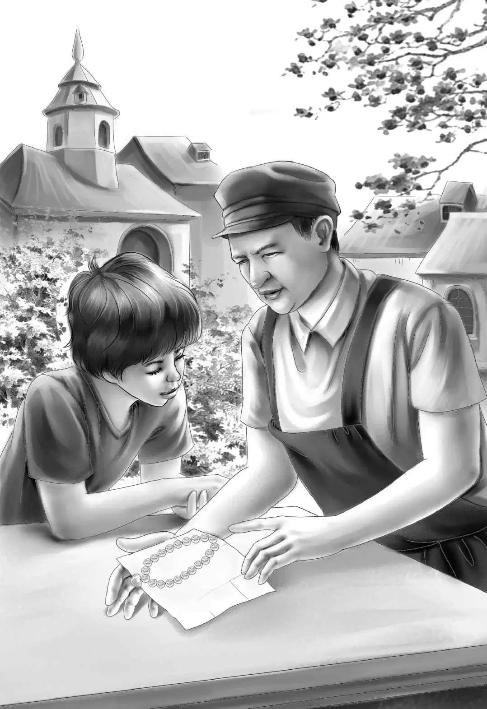

It was not far from Glass Factory to Pinedale. Suddenly Jessie said， “Grandfather， let’s have a party for the train crew and the people at Pinedale. We have big boxes of cookies. And I could use up all the canned orange juice and mix it with coke. Do you think it would be good？”
“We can try it and see，” said Henry.
Jessie put one bottle of coke into a big pitcher. Then she put in a cup of orange juice.
“Not bad！” Henry said.
Violet tried it. She said， “It really is good.”
The train rattled along. Soon they heard the whistle up in the engine.
Mr. Alden said， “Remember Cho-Cho doesn’t know we have found the necklace. And he doesn’t know that his horse is on the train.”
“Do you think he’ll be at the station？” asked Henry.
“Yes， I do. Mr. Shaw has to be at the station， and Cho-Cho helps him.”
When the train stopped， all the Aldens looked out.
Benny said， “The very same men！Six of them.”
The Aldens hurried down the steps. Everyone began to shake hands.
Grandfather said to Benny， “You found the necklace. You give it to Cho-Cho.”
Benny couldn’t wait a second. He shouted， “Cho-Cho！Come here a minute！See what we found. We found it in the mattress in the lookout！”
Cho-Cho took the paper package. He did not understand what Benny was talking about. “Open it！” said Benny. “It’s yours！”
Everyone was watching. Cho-Cho took off the paper， and there hung the diamond necklace shining in the sun.
Cho-Cho began to shake. He said， “Chi-Chi！Your necklace！”
“Look out. He’s going to faint，” said Mr. Shaw.
“Oh， no， I’m not，” said Cho-Cho. “I’m going right to Glass Factory and buy my horse back. Mr. Cutler will sell him when I show him these diamonds.”
“I’m sure he will，” said Mr. Alden， smiling.
“We’ll go with you， Cho-Cho，” said Benny. “Come on， we’ll get on the train.”

“No， boy，” said Cho-Cho. “That train is going the other way.”
His voice was quite loud. Major heard his master， and he did his best to answer with a loud whinny.
“Major！” shouted Cho-Cho. He could not hurry fast enough.
Al and Henry had the board ready. And off walked Major without a single slip. He stopped beside his master.
Cho-Cho put his arms around the horse’s neck and began to talk to him.
“Oh， Major， I was so lonesome for you！”
Then nobody could believe it. The answer came back， “I was lonesome for you， too.”
“That sounded just like a horse，” shouted Benny.
Mr. Carr laughed. “What does a horse sound like， Benny？” he asked.
“The horse didn’t really talk though， did he？” asked Benny.
“Well， no， I can’t really talk，” came the horse’s voice.
Everyone looked at Cho-Cho， but nobody could see his lips move. The horse said， “My master is a clever man， as you say. I have missed him very much.”
Mr. Davis said， “People would pay money to hear Cho-Cho and his horse talking together.”
“I would myself，” said Mr. Alden.
“I’m hungry， Cho-Cho，” said Major. Still Cho-Cho did not move his lips.
Benny was glad to hear that. “We’re all hungry， Major. We are going to have a party right now.”
Henry said， “Everyone come into the caboose and help bring the things down.”
Mr. Carr came down with a big plate of cookies. Mr. Davis had another. Henry and Al came down with the new drink in big pitchers.
“This is our Alden orange-coke special，” said Henry.
All the people stood around eating. Mr. Alden said to Cho-Cho， “Do you want to sell the necklace？”
“Yes，” said Cho-Cho. “Diamonds are no good to me.”
“Do you know what you want to do with the money？” asked Mr. Alden.
“Oh， yes， I thought of that long ago. I can buy a truck with a horse-trailer on the back. This would be a little home for Major and a home for me. I’ve always wanted to travel around and show my talking horse.”
“Good！” said Mr. Alden. “I wish I could go with you. I am going to New York soon anyway. I shall be glad to sell the necklace for you.”
Cho-Cho gave the necklace to Mr. Alden. He said， “I’m afraid I couldn’t do it myself. But I could get the trailer.”
“Could you？” asked Grandfather in surprise.
“Yes， I could，” said Cho-Cho. “It’s not far. I think Mr. Shaw will take me tomorrow in his car.”
“Tomorrow？Tonight！”said Mr. Shaw. “Why wait till tomorrow， Cho-Cho？”
Suddenly Mr. Davis said， “Listen！Here comes a motorcycle. I wonder who that is.”
A large man dashed up on a motorcycle. He got off quickly and went right over to Cho-Cho.
“Don’t you know me？” he asked.
Cho-Cho looked him over. “No. I never saw you before in my life，” he said.
“You’ve seen me hundreds of times，” said the man.
“I’ve seen you，” shouted Benny. “You’re a special postman， and your name is Sid Weston.”
The postman shook his head. “No， my name is not Sid Weston any more. My name is John Mann. I’m the Thin Man！”
Cho-Cho looked at him more closely. “You are the Thin Man， John！” he exclaimed. “But you aren’t thin any more.”
“I hope not，” said the Thin Man. “I worked hard enough to gain all this weight. It took me over a year. But it was worth it. Nobody ever knew me.”
Cho-Cho said slowly， “John， tell me why did you ever run away if you didn’t take those diamonds？”
“I want to tell you，” said the Thin Man. “Nobody believed what I said， and I had a lot of money on me. I didn’t have a chance to hide it. I had been saving all my money for a long time. I didn’t want to stay in the circus all my life. The money was sewed in the lining of my coat.”
Henry nodded. “That would mean trouble for you. If the police had found all that money， they would think you had stolen the diamonds for sure.”
“And sold them，” said Benny.
“Right，” said the Thin Man. “You’re a smart boy. I went to a lonely place and lived in a tumble-down house， and nobody found out where I went.”
Mr. Shaw said， “You must have been eating all the time.”
“Yes， that’s all I did，” said the Thin Man. “I would walk to a big city and get all the food I could carry. Then I just sat around and ate.”
“I never heard of such a thing，” said Mr. Alden. “I suppose when you were fat enough， you looked for a job as a postman.”
“Yes， I used to be a postman before I joined the circus. So I got a job near the Little North Railroad. When I heard that notice on the radio， I came down here as fast as I could. I rode all night. I haven’t had a happy moment since Chi-Chi died. Who was kind enough to put that news on the radio？”
“Grandfather，” said four voices.
“Thank you， Grandfather，” said the Thin Man with a bow. Everybody laughed.
Just then Mr. Carr said， “I am sorry to stop this party， but the train has to go along.”
“Could I go， too？” asked the Thin Man. “I want to stop and see my friend Old Beaver. It will save me a lot of time if you could take me and my motorcycle on board.”
Mr. Carr laughed. He said， “We’re not supposed to stop at Beaver Lake. But I guess we can stop long enough to let you off.”
The Aldens went up the steps of Number 777. The Thin Man followed with his motorcycle. Then the train moved away， leaving behind some good friends who were still laughing and pointing and waving.